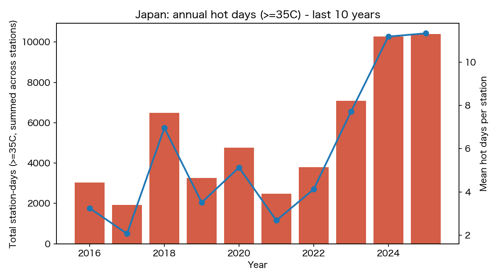
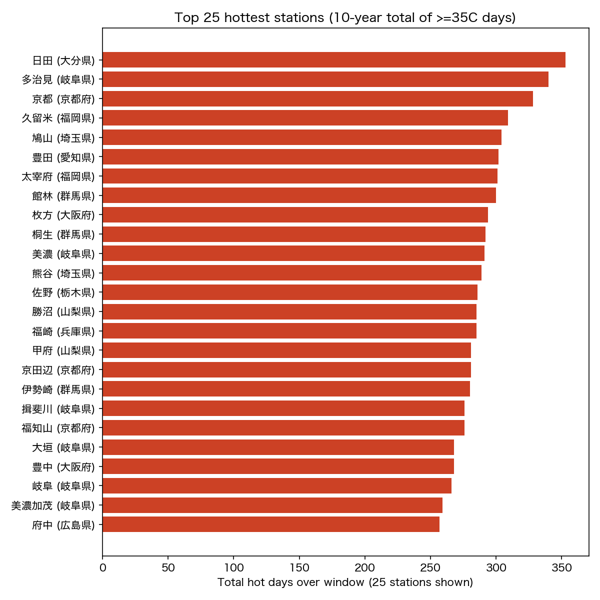
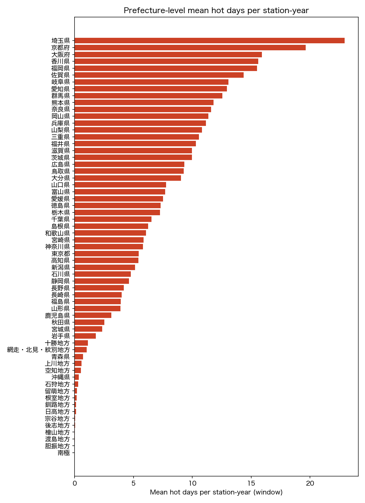

主要指標（2016–2025年）
全国平均・2025年
11.3日
2016年比 約3.5倍
最多猛暑日（年平均）
35.3日
日田（大分県）
猛暑日ゼロの地点
153か所
10年間一度も記録なし
集計対象地点数
1,321
気象官署 + AMeDAS
全国インタラクティブマップ
円の大きさ＝10年間の平均猛暑日数。クリックで地点名・平均日数を表示。
別タブで開くと操作しやすい → マップを全画面で開く
グラフ

全国年別猛暑日数の推移（観測点あたり平均）

猛暑日数ランキング（上位20地点・10年平均）

都道府県別猛暑日数サマリー
猛暑日数ランキング TOP 10（10年平均）
| # | 地点 | 都道府県 | 年平均 | 最大値 |
|---|---|---|---|---|
| 1 | 日田 | 大分県 | 35.3日 | 62日 |
| 2 | 多治見 | 岐阜県 | 34.0日 | 59日 |
| 3 | 京都 | 京都府 | 32.8日 | 61日 |
| 4 | 久留米 | 福岡県 | 30.9日 | 54日 |
| 5 | 鳩山 | 埼玉県 | 30.4日 | 51日 |
| 6 | 豊田 | 愛知県 | 30.2日 | 57日 |
| 7 | 太宰府 | 福岡県 | 30.1日 | 62日 |
| 8 | 館林 | 群馬県 | 30.0日 | 54日 |
| 9 | 枚方 | 大阪府 | 29.4日 | 51日 |
| 10 | 桐生 | 群馬県 | 29.2日 | 58日 |
猛暑日ゼロの地点（153か所）
2016〜2025年の10年間で一度も35°Cを超えなかった観測地点。北海道・高原・沿海・離島の4タイプに分類できる。
北海道
73
道東・沿岸は夏の海霧（やませ）で冷却。胆振・釧路地方は全地点がゼロ。
沿海・離島
29
宮古島・南大東島（沖縄）、勝浦（千葉）、父島・三宅島（東京）など。海洋性気候が最高気温を抑制。
高原・山岳
24
富士山・軽井沢・草津・野辺山・奥日光・阿蘇山など。標高が最大の防護壁。
東北・山間部
24
酸ケ湯（青森）・薮川（岩手）・桧枝岐（福島）など。北方冷涼帯と地形の複合効果。
代表的な「涼しい地点」：
稚内・宗谷
釧路・釧路地方
根室・根室地方
室蘭・胆振
苫小牧・胆振
えりも岬・日高
軽井沢・長野
野辺山・長野
草津・群馬
菅平・長野
奥日光・栃木
那須高原・栃木
勝浦・千葉
富士山・山梨/静岡
父島・東京
宮古島・沖縄
南大東島・沖縄
酸ケ湯・青森
薮川・岩手
桧枝岐・福島
室戸岬・高知
雲仙岳・長崎
昭和基地・南極
このデータについて
| データソース | 気象庁 過去の気象データ（data.jma.go.jp/obd/stats/etrn/） |
| 対象期間 | 2016〜2025年（10か年） |
| 対象地点 | 気象官署（有人）約160点 ＋ AMeDAS（自動）約1,519点 |
| 猛暑日 | 日最高気温 35°C以上（気象庁公式定義） |
| 解析ツール | Python（httpx, BeautifulSoup4, pandas, Folium, matplotlib） |